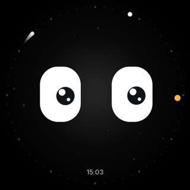
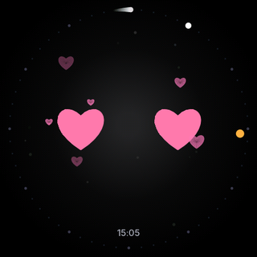
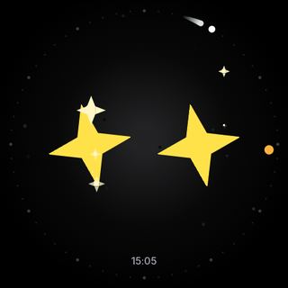
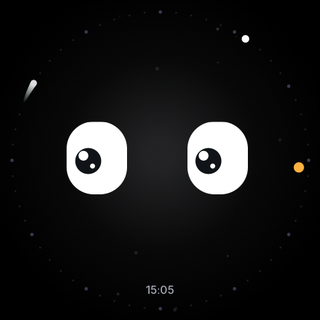
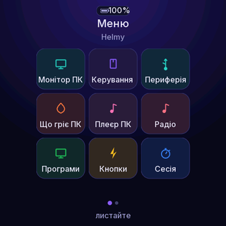
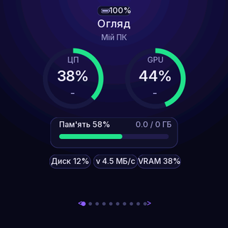
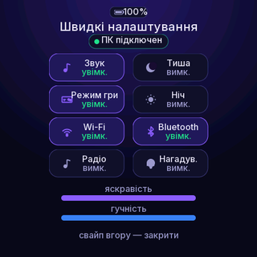
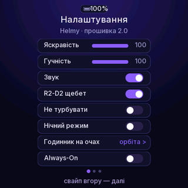

Невеликий настільний бот з AMOLED-екраном і живими очима. Він показує, що діється з комп'ютером, керує ним кнопками й жестами, показує сповіщення Windows і початок трансляцій на Twitch — і просто тішить око. Працює з програмою Helmy Agent на ПК по USB або Bluetooth.
A small desk bot with an AMOLED screen and lively eyes. It shows what your computer is doing, controls it with buttons and gestures, displays Windows notifications and Twitch stream alerts — and simply makes your desk nicer. It works with the Helmy Agent program on your PC over USB or Bluetooth.




Навантаження й температура процесора та відеокарти, пам'ять, диск, мережа, час роботи. Екран «Що гріє ПК» показує найважчі процеси.
CPU and GPU load and temperature, memory, disk, network, uptime. “What heats the PC” lists the heaviest processes.
Живлення (сон, перезавантаження, вимкнення з підтвердженням), тачпад і гіро-миша, гарячі клавіші, презентації, медіа.
Power (sleep, restart, shutdown with confirmation), touchpad and gyro mouse, hotkeys, presentations, media.
Свої кнопки для програм, сайтів, макросів і гарячих клавіш. Редагуються в Agent, працюють на екрані плати.
Your own keys for programs, websites, macros and hotkeys. Edited in the Agent, used on the board's screen.
Оберіть програми в Agent — і запускайте їх дотиком до екрана плати.
Pick programs in the Agent and launch them by tapping the board's screen.
Сповіщення Windows з вибраних програм і сповіщення Twitch про початок стрімів ваших каналів (плата перевіряє Twitch сама через Wi-Fi).
Windows notifications from chosen apps and Twitch alerts when your channels go live (the board checks Twitch itself over Wi-Fi).
Bluetooth-пристрої із зарядом, а також список пристроїв 2,4 ГГц, підключених до ПК.
Bluetooth devices with battery level, plus a list of 2.4 GHz devices connected to the PC.
Годинник на очах, погода, будильник, нагадування випити води й розім'ятись, інтернет-радіо, ігри.
Clock on the eyes, weather, alarm, water and stretch reminders, internet radio, games.
Дані йдуть напряму між платою та вашим ПК. Жодних акаунтів і серверів Helmy.
Data goes directly between the board and your PC. No Helmy accounts or servers.
Нову прошивку можна встановити з Agent одним кліком, без кабелю для прошивання. Прошивка підписана.
Install new firmware from the Agent with one click, no flashing cable needed. Firmware is signed.




ВерсіяVersion … ·
Helmy-Setup.exeHelmy-Setup.exe
SHA-256: …
Windows 10/11, права адміністратора не потрібні. Програма й інсталятор — один файл.
Windows 10/11, no administrator rights needed. The program and installer are one file.
Windows може показати попередження про невідомого видавця (SmartScreen): натисніть «Докладніше» → «Все одно виконати». Перевірте SHA-256 завантаженого файлу (PowerShell: Get-FileHash .\Helmy-Setup.exe) — він має збігатися з вказаним вище.
Windows may warn about an unknown publisher (SmartScreen): press “More info” → “Run anyway”. Check the SHA-256 of the downloaded file (PowerShell: Get-FileHash .\Helmy-Setup.exe) — it must match the value above.
Keyhelm — окремий застосунок для керування ПК з телефона. Його сторінка завантаження тут: keyhelm.html.
Keyhelm is a separate app for controlling a PC from a phone. Its download page is here: keyhelm.html.